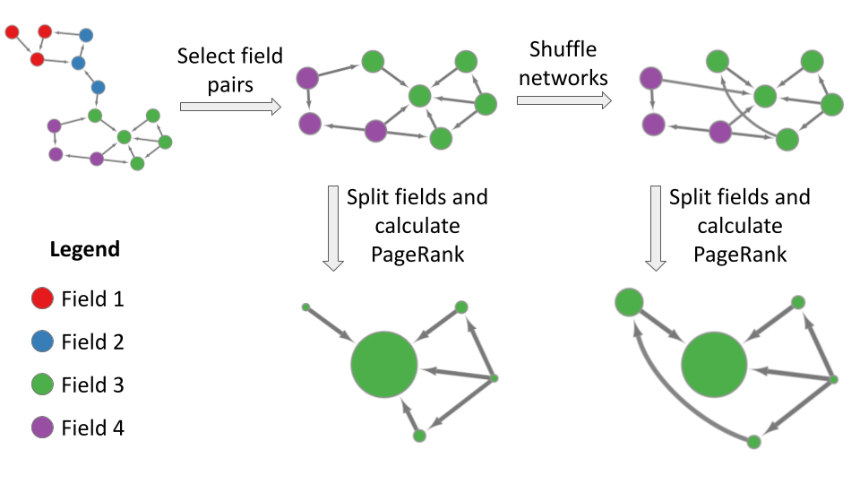
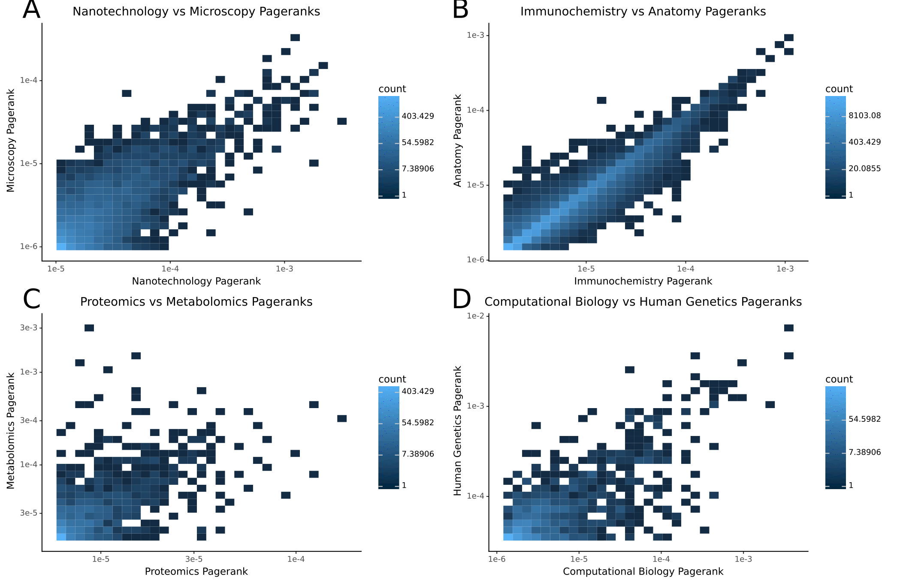
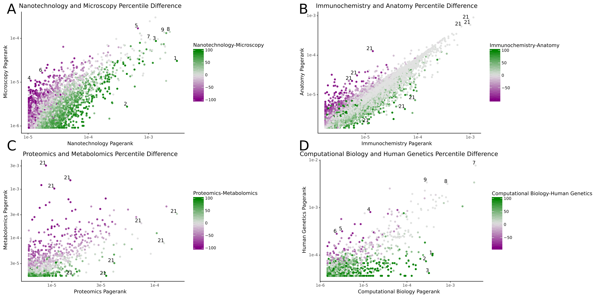

Benjamin J. Heil 0000-0002-2811-1031
· ben-heil
· autobencoder
Genomics and Computational Biology Graduate Group, Perelman School of Medicine, University of Pennsylvania
· Funded by The Gordon and Betty Moore Foundation (GBMF4552)
Casey S. Greene✉ 0000-0001-8713-9213
· cgreene
· greenescientist
Department of Pharmacology, University of Colorado School of Medicine; Department of Biochemistry and Molecular Genetics, University of Colorado School of Medicine
· Funded by The Gordon and Betty Moore Foundation (GBMF4552); The National Human Genome Research Institute (R01 HG10067)
✉ — Correspondence possible via GitHub Issues
or email to
Casey S. Greene <casey.s.greene@cuanschutz.edu>.
Abstract
Introduction
There are more academic papers than any human can read in a lifetime.
Attention has been given to ranking papers, journals, or researchers by their “importance,” assessed via various metrics.
Citation count assumes the number of citations determines a paper’s importance.
The h-index and Journal Impact Factor focus on secondary factors like author or journal track records.
Graph-based methods like PageRank or disruption index use the context of the citing papers to evaluate an article’s relevance [1,2,3,4].
Each of these methods has its strengths, and permutations exist that attempt to shore up specific weaknesses [5,6,7,8].
One objection to such practices is that “importance” is subjective.
The San Francisco Declaration on Research Assessment (DORA) argues against using Journal Impact Factor, or any journal-based metric, to assess individual manuscripts or scientists [9].
DORA further argues in favor of evaluating the content of scientific content of articles and notes that any metrics used should be article-level ones [10/].
However, even article-level importance ignores that the importance of a specific scientific output will fundamentally differ across fields.
Nobel prize-winning work will often be less important in cancer biology if the prize-winning article is an astrophysics one.
Because there are differences between fields’ citation practices [11], scientists have developed strategies including normalizing the number of citations based on nearby papers in a citation network, rescaling fields’ citation data to give more consistent PageRank results, and so on [5,12,13,14].
Such approaches normalize away field-specific effects, which might help to compare one researcher with another in a very different field but do not address the difference in the relevance of a topic between fields.
This phenomenon of field-specific importance has been observed at the level of journal metrics.
Mason and Singh recently noted that depending on the field, the journal Christian Higher Education is either ranked as a Q1 (top quartile) journal or a Q4 (bottom quartile) journal [15].
It is possible that, while global journal-level metrics fail to capture field-specific importance, article-level metrics are sufficiently granular that the importance of a manuscript remains constant across fields.
We sought to examine the extent to which article-level metrics generalize between fields.
We examine this using MeSH terms to define fields and use field-specific citation graphs to assess their importance within the field.
While it is trivially apparent that journals or articles that do not have cross-field citations will have variable importance, we ignore these cases and include only those including citations in both fields, where we expect possible consistency.
We first replicate previous findings that journal-level metrics can differ substantially among fields.
We also find field-specific variability in importance at the article level.
We make our results explorable through a web app that shows metrics for overlapping papers between pairs of fields.
Our results show that even article-level metrics can differ substantially among fields.
We recommend that metrics used for assessing research outputs include field-specific, in addition to global, ones.
While qualitative assessment of the content of manuscripts remains time-consuming, our results suggest that within-field and across-field assessment remains key to assessing the importance of research outputs.
Results
Field-specific Citation Networks and Importances
We built citation networks using MeSH headings to denote fields.
We created a combined network and 100 shuffled versions for each pair of fields using a degree-preserving shuffling approach (see Methods).
We then split the original and shuffled networks to maintain the same set of papers within each constituent field, calculating the PageRank for all networks.
This process allows us to compare the manuscript’s observed PageRank in each field with that constructed from a null that assumes no meaningful differences in citation patterns between fields.
Finally, we calculated percentile scores by comparing the PageRanks for the original and shuffled networks and made our results available at (TODO web server URL).

Figure 1: Schematic of the network analysis workflow.
We construct networks of citations from pairs of MeSH headings, create shuffled versions of the graphs, split the networks into their component fields, and calculate the PageRank for each article in the networks.
Journal Importances Differ Between Fields
In an attempt to quantify the relative importance of journals, scientists have created rankings using metrics the Journal Impact Factor, which is essentially based on citations per article, and those that rely on more complex representations like Eigenfactor [16].
It has previously been reported that journal rankings differ substantially between fields using metrics based on citation numbers [15].
We calculated a PageRank-based score for the journal as the median PageRank of manuscripts published in that journal for that field.
We first sought to understand the extent to which journal importance differences replicated using PageRank.
The journal Science provides an example of field-specific PageRank scores.
In the fields of nanotechnology or microscopy, the journal Science is the most influential journal based on median PageRank (Fig. 2 A).
However, for immunochemistry and anatomy, Science ranks fifth behind journals including Nature and Cell (Fig. 2 B).
Further, while journals are sometimes used as a proxy measure for field [12], we find they often play host to interdisciplinary papers that may be more accurately assigned to a different field.
For example, “The metabonomic signature of celiac disease” is a paper with an extremely high PageRank in the field of metabolomics, but it was actually published in the Journal of Proteome Research[17].
Figure 2: Differences between journal ranks across fields. Each point in the figure represents the median pagerank of all papers in the journal for the given fields.
Manuscript PageRanks Differ Between Fields
We examined the univariate distributions of PageRank across fields (Fig. TODO).
To control for differences in the papers present, we also performed the analyses for field pairs using only the intersecting papers (Fig. TODO).
We found that fields differed in their PageRank distributions.
We also examined the correspondence of individual papers within the field-pair intersections.
We selected a representative field pair (Fig. 3 A), a field pair above the median (Fig. 3 B), and two high correlation field pairs (Fig. 3 C,D).
We found that many papers exhibited some correspondence between fields.
However, given the differences in univariate distributions, it remained difficult to determine which differences might be meaningful.

Figure 3: Heatmap of shared papers across fields
We devised a strategy to generate an empirical null for a field pair under the assumption that the field pair represented a single, homogenous field.
For each field-pair intersection, we performed a degree-distribution preserving permutation.
We created 100 permuted networks for each field pair.
We then calculated a percentile using the number of permuted networks with a lower PageRank for a manuscript than the true PageRank.
A manuscript with a PageRank higher than all networks has a percentile of 100, and one lower than all permuted networks has a percentile of zero.
We used the difference in the percentile in each field as the field-specific affinity for a given paper.
The nanotechnology/microscopy plot has a normal amount of variance, and clearly demonstrates the differences between fields (Fig. 4 A).
In the center of the plot are papers that have similar percentile scores in both fields.
Towards the right side most papers have a large positive nanotech-microscopy score, indicating that they are more highly valued in the field of nanotechnology than in microscopy.
Such papers include “A robust DNA mechanical device controlled by hybridization topology” and “Bioadhesive poly(methyl methacrylate) microdevices for controlled drug delivery”, while other papers such as “Turning the spotlight on cellular imaging” appropriately have a large negative nanotechnology-microscopy score despite falling far to the nanotech side of the distribution [18,19,20].
Meanwhile, the left side holds papers with strong negative scores, indicating the field of microscopy values the papers more.
The left side has papers like “Photostable luminescent nanoparticles as biological label for cell recognition of system lupus erythematosus patients” and “WSXM: a software for scanning probe microscopy and a tool for nanotechnology” [21,22].
The papers with a high PageRank and similar percentile scores between fields are likely to be influential in both fields.
In nanotechnology/microscopy these papers are frequently nanoscopic imaging papers like “Imaging intracellular fluorescent proteins at nanometer resolution”, “In vivo imaging of quantum dots encapsulated in phospholipid micelles”, and “Water-Soluble Quantum Dots for Multiphoton Fluorescence Imaging in Vivo” [23,24,25].
The immunochemistry/anatomy fields have much higher correlation in their shared papers, but still have some outliers (Fig. 4 B).
Examples of papers preferred in the immunochemistry field are “Immunoelectron microscopic exploration of the Golgi complex”, “Immunocytochemical and electrophoretic analyses of changes in myosin gene expression in cat posterior temporalis muscle during postnatal development”, and “Electron microscopic demonstration of calcitonin in human medullary carcinoma of thyroid by the immuno gold staining method” [26,27,28].
Papers preferred in anatomy include “Grafting genetically modified cells into the rat brain: characteristics of E. coli β-galactosidase as a reporter gene”, “Vitamin-D-dependent calcium-binding-protein and parvalbumin occur in bones and teeth”, and “Mapping of brain areas containing RNA homologous to cDNAs encoding the alpha and beta subunits of the rat GABAA gamma-aminobutyrate receptor” [29,30,31]
Papers with high PageRank in both domains and a similar importance are “Studies of the HER-2/neu Proto-Oncogene in Human Breast and Ovarian Cancer”, “Expression of c-fos Protein in Brain: Metabolic Mapping at the Cellular Level”, and “Proliferating cell nuclear antigen (PCNA) immunolocalization in paraffin sections: An index of cell proliferation with evidence of deregulated expression in some, neoplasms” [32,33,34].
Where immunochemistry/anatomy served as an example of a highly correlated pair of fields, papers in proteomics/metabolomics have very different PageRanks between fields (Fig. 4 C).
These fields illustrate one of the reasons why the difference in percentile scores is a useful metric: there is so much dispersion that it’s hard to tell where a trend line should be.
When coloring by the difference in scores, however, it is easy to see which papers are valued more in each field.
The proteomics-heavy papers include “Proteomics Standards Initiative: Fifteen Years of Progress and Future Work”, “Limited Environmental Serine and Glycine Confer Brain Metastasis Sensitivity to PHGDH Inhibition”, and “A high-throughput processing service for retention time alignment of complex proteomics and metabolomics LC-MS data”, [35,36,37] while the metabolomics papers have titles such as “MeltDB: a software platform for the analysis and integration of metabolomics experiment data”, “In silico fragmentation for computer assisted identification of metabolite mass spectra”, and “The Metabonomic Signature of Celiac Disease” [17,38,39].
The articles with high PageRank and importance in both fields include “Visualization of omics data for systems biology”, “FunRich: An open access standalone functional enrichment and interaction network analysis tool”, and “Proteomic and Metabolomic Characterization of COVID-19 Patient Sera” [40,41,42].
The final pair, computational biology/human genetics, is interesting because while there is a good degree of variance in the PageRank values across fields, the highest rated papers in both fields had very similar percentile scores (Fig. 4 D).
The high percentile difference papers in computational biology include several database papers [43,44,45].
Their counterparts in human genetics were more on the policy paper side, likely because the human genetics MeSH subheading is distinct from the several other genetics subheadings including genetic research, population genetics, genomics, etc. [46,47,48].
Meanwhile, the papers with high PageRanks in both fields tend to have similar percentile scores and be related to the genome sequencing and mapping [49,50,51].

Figure 4: The difference between percentile scores for four field pairs.
Here’s a web app
To demonstrate our findings, we have also set up a web server with all pairs of networks instead of solely the ones shown in this paper.
The web server can be found at X
Methods
COCI
We used the March 2022 version of the COCI citation index [52] as the source of our citation data.
This dataset contains around 1.3 billion citations from ~73 million bibliographic resources.
Selecting fields
To differentiate between scientific fields, we needed a way to map papers to fields.
Fortunately, all the papers in Pubmed Central (https://www.ncbi.nlm.nih.gov/pmc/) have corresponding Medical Subject Headings (MeSH) terms.
While MeSH terms are varied and numerous, the subheadings of the Natural Science Disciplines (H01) category fit our needs.
However, MeSH terms are hierarchical, and vary greatly in their size and specificity.
To extract a balanced set of terms we recursively traversed the tree and selected headings that have least 10000 DOIs and don’t have multiple children that also meet the cutoff.
Our resulting set of headings contained 45 terms, from “Acoustics” to “Water Microbiology”.
Building single heading citation networks
The COCI dataset consists of pairs of Digital Object Identifiers (DOIs).
To change these pairs into a form we could run calculations on, we needed to convert them into networks.
To do so, we created 45 empty networks, one for each MeSH term we selected previously.
We then iterated over each pair of DOIs in COCI, and added them to a network if the DOIs corresponded to two journal articles written in english, both of which were tagged with the corresponding MeSH heading.
Building combined networks
Because we were interested in the differences between fields, we also needed to build networks from pairs of MeSH headings.
These networks were built via the same process, except that instead of keeping articles corresponding to a single DOI we added a citation to the network if both articles were in the pair of fields, even if the citation occurred across fields.
Running this network-building process yielded 990 two-heading networks.
Shuffling networks
Sampling a graph from the degree distribution while preserving the distribution of degrees in the network turned out to be challenging.
Because citation graphs are directed, it’s not possible to simply swap pairs of edges and end up with a graph that is uniformly sampled from the space.
Instead, a more sophisticated three-edge swap method must be used [53].
Because this algorithm had not been implemented yet in NetworkX [54], we wrote the code to perform shuffles and submitted our change to the library.
With the shuffling code implemented, we created 100 shuffled versions of each of our combined networks to act as a background distribution to compare metrics against.
Splitting networks
Once we had a collection of shuffled networks, we needed to split them into their constituent fields.
To do so, we reduced the network to solely the nodes that were present in the single heading citation network, and kept only citations between these nodes.
Running PageRank
We used the NetworkX implementation of PageRank with default parameters to evaluate paper importance within fields.
Percentile score
To determine the degree to which the papers’ PageRank values were higher or lower than expected, we compared the PageRank values calculated for the true citation networks to the values in the shuffled networks for each paper.
We then recorded the fraction of shuffled networks where the paper had a lower PageRank than in the true network to derive a single number that described these values.
For example, if a paper had a higher PageRank in the true network than in all the shuffled networks it received a score of 1.
Likewise, if it had a lower PageRank in the true network than in all the shuffled networks it received a score of 0.
Papers in between the two extremes had fractional values, like .5 (a paper that fell in the middle of the pack) and so on.
Differences in percentiles
A convenient feature of the percentile scores is that they’re directly comparable between fields.
If a paper is present in two fields, the difference in scores between the two fields can be used to estimate its relative importance.
For example, if a paper has a score of 1 in field A (indicating a higher PageRank in the field than expected given its number of citations and the network structure) and a score of 0 in field B (indicating a lower than expected PageRank), then the large difference in scores indicates the paper is more highly valued in field A than field B.
If the paper has similar scores in both fields, it indicates that the paper is similarly valued in the two fields.
Hardware/runtime
The analysis pipeline was run on the RMACC Summit cluster.
The full pipeline, from downloading the data to analyzing it to vizualizing it took about a week to run.
However, that number is heavily dependent on details such as the number of CPU nodes available and the network speed.
Server details
Our webserver is built by visualizing our data in Plotly (https://plotly.com/python/plotly-express/) on the Streamlit platform (https://streamlit.io/).
The field pairs made available by the frontend are those with at least 1000 shared papers after filtering out papers with more than a 5% missingness level of their PageRanks after shuffling.
The journals available for visualization are those with at least 25 papers for the given field pair.
Discussion/Conclusion
We analyze hundreds of field-pair citation networks to examine the extent to which article-level importance metrics vary between fields.
As previously reported (TODO: ADD REFS), we find systematic differences in PageRanks between fields that would warrant some form of normalization when making cross-field comparisons with global statistics.
However, we also find that field-specific differences are not driven solely by differences in citation practices.
Instead, the importances of individual papers appear to differ meaningfully between fields.
Global rankings or efforts to normalize out field-specific effects obscure meaningful differences in manuscript importance between communities.
As with any study, this research has certain limitations.
We generate a background distribution of PageRanks for each field pair by performing a defined number of swaps.
Our empirical results suggest that three times as many swaps as edges reach a point of stability , but certain network structures may require a different number.
Another limitation is our selection of MeSH terms to represent fields.
We used MeSH because it is a widely-annotated set of subjects in biomedicine and thresholded MeSH term sizes to balance having enough observations to calculate appropriate statistics with having sufficient granularity to capture fields.
This resulted in fields at the granularity of “X” and “Y.”
We also note that there are inherent issues with the premise of ranking manuscript importances.
We sought to understand the extent to which such rankings were stable between fields after correcting for field-specific citation practices.
We found limited stability between fields, mostly between closely-related fields, suggesting that the concept of a universal ranking of importances is difficult to justify.
In the way that reducing a distribution to a Journal Impact Factor distorts assessment, attempting to use a single universal score to represent importance across fields poses similar challenges at the level of individual manucripts.
Furthermore, this work’s natural progression would extend to estimating the importance of individual manuscripts to individual researchers.
Thus, a holistic measure of importance would need to include a distribution of scores not only across fields but across researchers.
It may ultimately be impossible to calculate a meaningful importance score.
The lack of ground truth for importance is an inherent feature, not a bug, of science’s step-wide progression.
Shifting from the perspective of evaluation to discovery can reveal more appropriate uses for these types of statistics.
Field-pair calculations for such metrics may help with self-directed learning of new fields.
An expert in one field, e.g., computational biology, who aims to learn more about genetics may find manuscripts with high importance in genetics and low importance in computational biology to be important reads.
These represent manuscripts not currently widely cited in one’s field but highly influential in a target field.
Our application can reveal these manuscripts for MeSH field pairs, and our source code allows others to perform our analysis with different granularity.
References
1.
An index to quantify an individual's scientific research output
Disruptive papers published in Scientometrics: meaningful results by using an improved variant of the disruption index originally proposed by Wu, Wang, and Evans (2019)
Lutz Bornmann, Sitaram Devarakonda, Alexander Tekles, George Chacko
Imaging Intracellular Fluorescent Proteins at Nanometer Resolution
Eric Betzig, George H Patterson, Rachid Sougrat, OWolf Lindwasser, Scott Olenych, Juan S Bonifacino, Michael W Davidson, Jennifer Lippincott-Schwartz, Harald F Hess
Studies of the HER-2/
<i>neu</i>
Proto-Oncogene in Human Breast and Ovarian Cancer
Dennis J Slamon, William Godolphin, Lovell A Jones, John A Holt, Steven G Wong, Duane E Keith, Wendy J Levin, Susan G Stuart, Judy Udove, Axel Ullrich, Michael F Press
Proliferating cell nuclear antigen (PCNA) immunolocalization in paraffin sections: An index of cell proliferation with evidence of deregulated expression in some, neoplasms
PA Hall, DA Levison, AL Woods, CC-W Yu, DB Kellock, JA Watkins, DM Barnes, CE Gillett, R Camplejohn, R Dover, … DP Lane
Proteomics Standards Initiative: Fifteen Years of Progress and Future Work
Eric W Deutsch, Sandra Orchard, Pierre-Alain Binz, Wout Bittremieux, Martin Eisenacher, Henning Hermjakob, Shin Kawano, Henry Lam, Gerhard Mayer, Gerben Menschaert, … Andrew R Jones
Limited Environmental Serine and Glycine Confer Brain Metastasis Sensitivity to PHGDH Inhibition
Bryan Ngo, Eugenie Kim, Victoria Osorio-Vasquez, Sophia Doll, Sophia Bustraan, Roger J Liang, Alba Luengo, Shawn M Davidson, Ahmed Ali, Gino B Ferraro, … Michael E Pacold
A high-throughput processing service for retention time alignment of complex proteomics and metabolomics LC-MS data
Isthiaq Ahmad, Frank Suits, Berend Hoekman, Morris A Swertz, Heorhiy Byelas, Martijn Dijkstra, Rob Hooft, Dmitry Katsubo, Bas van Breukelen, Rainer Bischoff, Peter Horvatovich
Nils Gehlenborg, Seán I O'Donoghue, Nitin S Baliga, Alexander Goesmann, Matthew A Hibbs, Hiroaki Kitano, Oliver Kohlbacher, Heiko Neuweger, Reinhard Schneider, Dan Tenenbaum, Anne-Claude Gavin
FunRich: An open access standalone functional enrichment and interaction network analysis tool
Mohashin Pathan, Shivakumar Keerthikumar, Ching-Seng Ang, Lahiru Gangoda, Camelia YJ Quek, Nicholas A Williamson, Dmitri Mouradov, Oliver M Sieber, Richard J Simpson, Agus Salim, … Suresh Mathivanan
Thomas J Hudson, Lincoln D Stein, Sebastian S Gerety, Junli Ma, Andrew B Castle, James Silva, Donna K Slonim, Rafael Baptista, Leonid Kruglyak, Shu-Hua Xu, … Eric S Lander